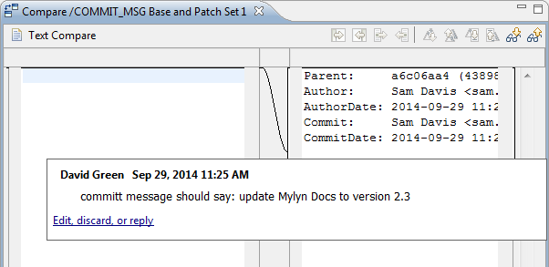
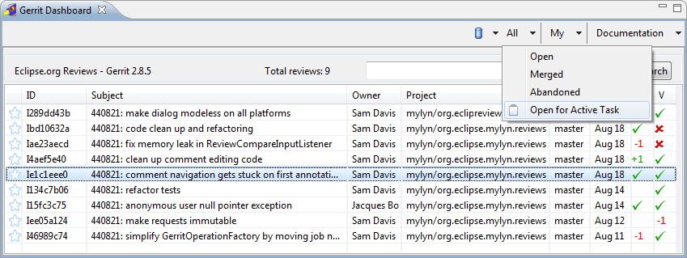
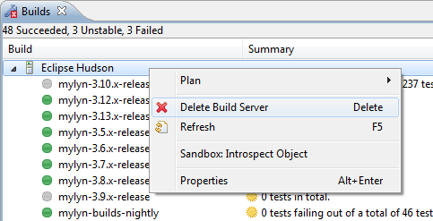

| Release | Resolved | Community Contributions |
| 3.13 September 26, 2014 |
38 bugs |
Community
contributions were provided by Daniel Deady, Steve Elsemore, Michael Keppler,
David King, Maarten Meijer, Guy Perron, and Leo Dos Santos.
Includes: Mylyn 3.13, Mylyn Builds 1.5, Mylyn Commons 3.13, Mylyn Context 3.13, Mylyn Docs 2.2, Mylyn Reviews 2.4. Mylyn Tasks 3.13, Mylyn Versions 1.5. |
NOTE: Mylyn 3.13 requires Java 1.6 or later and supports Eclipse 3.8, 4.3 or 4.4. Eclipse 3.6 is now the base compilation target, so Mylyn no longer runs on Eclipse 3.5. See the download page for repository locations.
|
Edit Inline Comments |
Draft inline comments can be edited and discarded, and inline comments can be replied to from within the compare editor.  |
|
|
|
|
See Review Approvals for the Active Task |
Quickly find all open reviews for the active task and see an overview of their approvals  |
|
Improved Markdown Support |
Markdown is now supported in the task editor, and WikiText supports converting documents in any supported markup language to Markdown. |
|
|
|
|
Generate XHTML |
WikiText can now output valid XHTML (see bug 438758). |
|
Remove Build Servers from Builds View |
Build servers can now easily be removed directly from the Builds view.  |
|
|
|
|
Jenkins 1.565.1 |
Jenkins 1.565.1 is now supported. |
|
Bugzilla 4.5.5, 4.4.5, 4.2.10, and 4.0.14 |
Bugzilla 4.5.5, 4.4.5, 4.2.10, and 4.0.14 are now supported. |
See porting guide for additional notes on API changes.
|
Tasks: Display All Person Attributes |
All attributes of kind TaskAttribute.KIND_PEOPLE are now displayed in the People section of the task editor by default: bug 294413 |